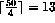

DISTRIBUTE tells the compiler how to divide the data between the processors. The idea is that the particular distribution methods are applied to the object to be distributed in each dimension. We distribute objects ONTO processor grids:
REAL, DIMENSION(50) :: A
REAL, DIMENSION(10,10) :: B, C, D
!HPF$ DISTRIBUTE (BLOCK) ONTO P1 :: A !1-D
!HPF$ DISTRIBUTE (CYCLIC,CYCLIC) ONTO P2 :: B,C !2-D
!HPF$ DISTRIBUTE D(BLOCK,*) ONTO P1 ! alt. syntax
(There must be the same number of non-* distributed dimensions as the rank of the grid.)
If an object is distributed then it is said to be mapped (or have a mapping). `Distribute' and `map' are used synonymously.
For example, the first distribute statement takes the matrix A divides it into equal sized contiguous blocks (except the last block which may be smaller than all the rest) and gives one block to each processor. A has 50 elements and P1 is of size 4, therefore each processor gets  elements, except the last, P1(4), which gets the remainder (11).
Cyclic distribution dishes the array elements out in much the same way as one would deal a pack of cards. Each processor gets one element in turn and when all processors have received one element, the first processor receives a second (and so on).
* distribution means that the dimension is ignored; this generally means that each processor gets the whole row (as in this case) or column: `give this whole dimension to the processor'.
The last directive in the above block demonstrates the FORTRAN 77 style of declaration.